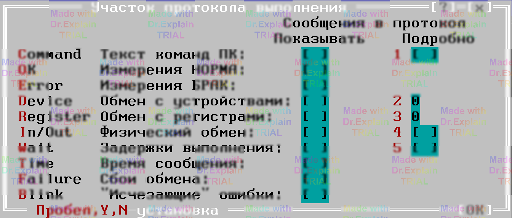

4.2 Команды для работы с протоколом выполнения
-
Ctrl‑
{и Ctrl‑}-
Работают с «составными» сообщениями, которые начинаются меткой
{beginи заканчиваются}end. -
Если курсор стоит на первой строке такого сообщения, Ctrl‑
}перенесёт его на последнюю строку, и наоборот. -
Если курсор находится внутри блока, то
- Ctrl‑
{найдёт его начало, - Ctrl‑
}— его конец.
- Ctrl‑
-
Команды Ctrl+K‑
{/ Ctrl+K‑}делают то же самое, но требуют установить курсор непосредственно на символ «{» или «}», что менее удобно.
-
Работают с «составными» сообщениями, которые начинаются меткой
-
Ctrl‑
B(block)- Открывает дополнительное окно «Участок протокола выполнения».
- Показывает детализированный участок, связанный с сообщением, на котором находится курсор.
- Сообщение должно содержать вложенные строки, иначе команда выдаст предупреждение и не выполнится.
- После открытия отображается меню с опциями (см. рис. 1); назначение опций описано в п. 5.2.
- Новые участки можно открывать как из основного протокола, так и из уже открытых окон участков.
-
Ctrl‑
O(open)- Также открывает окно «Участок протокола выполнения», но для блока, предварительно выделенного разметкой (см. [11, п. 12]).
- Блок должен быть «засвечен» (выделен) — иначе команда не сработает.
-
После открытия доступно то же меню, что и для Ctrl‑
B(см. рис. 1, опции — п. 5.2). - Работает как из основного окна, так и из уже открытого участка.

Примечание. В дополнительном окне отображаются лишь те строки, которые сохранены во «скрытом» протоколе. Если нужной детализации нет, проверьте настройки сохранения в меню Options → Report (п. 5.2).